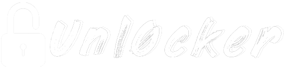
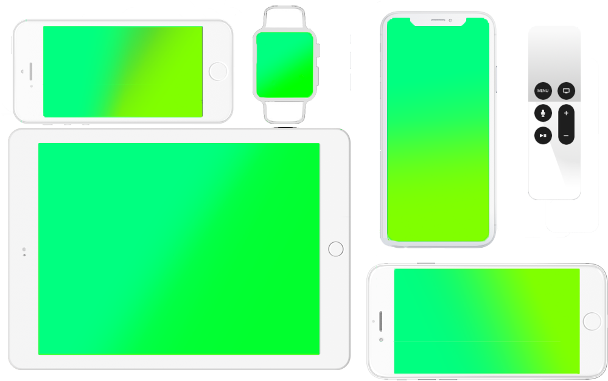

Compatible with
iOS12 – 12.1
watchOS 4.1

For all iPhones, iPods touch, iPads, Apple Watchs and Apple TVs
Except A12, A12X devices and Apple Watch S4
Download (for iOS)
Uses multipath tcp exploit.
Codesigning entitlements: Here
SHA1: 4c6e34a40621de2cd59cb3ebdf650307f7ccda93
Mirror:
Mega
Download (For WatchOS)
Uses vfs exploit.
SHA1: 8fa140a5a63377a44ff8ea4aa054605d261f270d
Mirror:
Mega
Download (tvOS)
Thanks to nitoTV and Jaywalker for the tvOS port!
SHA1: cff12acb81396778d4da3d0f574599d355862863
Mirror:
Mega
Important: Make sure to delete 12.1.1 OTA update, install OTA Blocker (may find it on Unl0cker app) and reboot before jailbreaking!